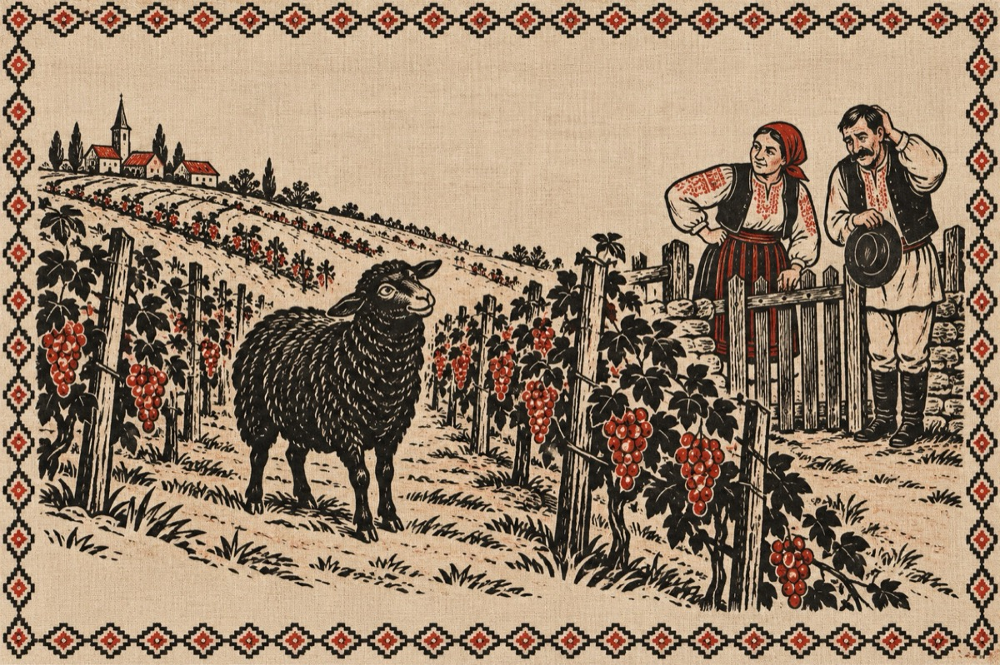

Tu Mărie meri în treabă-ți
– Meri în treabă-ți tu Marie
Eu mă gui în deal la vie
Câ am o țârucă grabă
Oaia neagră e beceagă.
Tu te du la nana Floare
Că azi ni e sărbătoare.
Ea pune de pancove
Tulai Doamne cât de bune
Și-o glăjuță cu gin ars
De te unje pă grumaz.
– Io mă duc la nana Floare
Că zâsăși că-i sărbătoare.
Dar tu minți măi Văsălie,
Oile nu îs la vie.
Mă prinsei care e baiu,
Tu meri la a lui Mihaiu,
Că aia e oaia neagră
De o prind o fac beceagă,
Sâ pă tine lângă ea,
De chem popa să vă ea
Înțelesu-mai o ba?!...
– No trăjnimar să mă ea
Zăuitai să-ți zâc ceva.
Tu Mărie, altu-i baiu
Io mărg astăzi cu Mihaiu
La vânat de căprioare
De-aia nu-ți zâsăi nimic
Șâ te-am minciunit un pic!
– O călcate-ar să ce calce
Altă treabă n-ai ce face
Stai acasă-n astă sară
Că mă fac eu căprioară
Că nu îs pericol mare
Să ce baje la-nchisoare
Pușcă-mă cu un țucat
Ș-om zburda la noi în pat!...
Vasile Groza